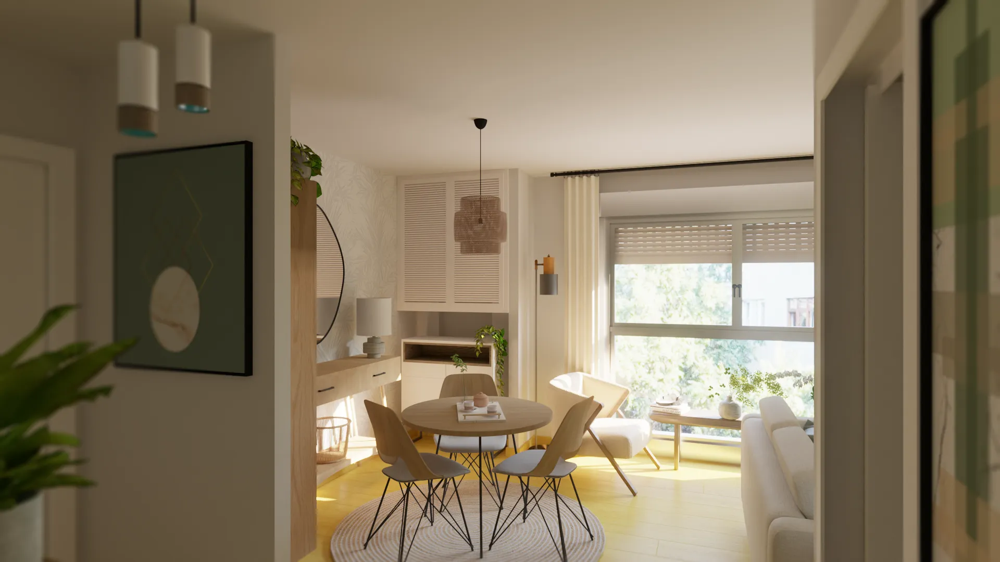
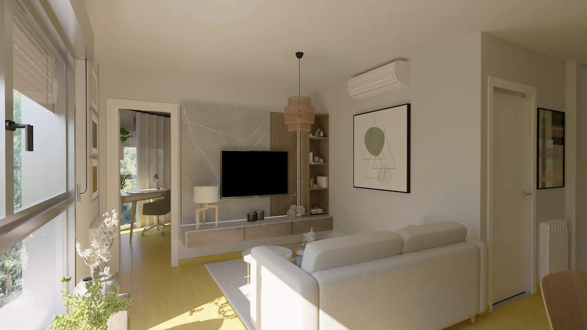
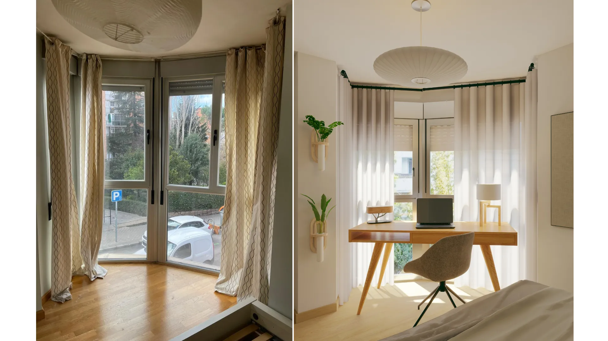

Home Staging virtual · Madrid
Preparación visual para comercialización sin intervención física: implantación verosímil, control de escala y criterios de materialidad e iluminación consistentes entre estancias y puntos de vista.
Contexto
Marco de trabajo: partir del estado real y definir reglas de consistencia para que el material comercial no induzca a error (escala, implantación y lectura espacial).
Encargo: producir un conjunto de visualizaciones 3D orientadas a comercialización, sin obra, para una vivienda de 45 m². El objetivo no era “decorar”, sino hacer legible el potencial real del espacio: jerarquía de usos, recorridos y compatibilidad del amueblamiento con una escala creíble.
En este tipo de servicio, el valor está en el criterio: una imagen puede resultar atractiva y, a la vez, ser incorrecta si el mobiliario no cabe, si los pasos no funcionan o si cada vista cuenta una historia distinta. Por eso se estableció una base dimensional y una pauta común de materialidad e iluminación para garantizar continuidad y evitar contradicciones entre estancias.
Planteamiento
Base de decisión: geometría útil, implantación y ejes de vista. Control previo para que el set final sea defendible en términos de escala y uso.
Se fijó una planta de trabajo (amueblamiento + zonificación + control dimensional) como capa previa a los renders. Esta fase actúa como “filtro técnico”: valida pasos, frentes de uso, giros, radios y alineaciones, y asegura que cada vista se apoya en la misma lógica espacial.
Con esta base se definieron los criterios que gobiernan todas las imágenes: implantación (piezas a escala, sin saturación y con recorridos operativos), holguras (distancias mínimas coherentes), ejes de mirada (encuadres consistentes) y continuidad (paleta, acabados e iluminación en una banda neutra controlada para mantener unidad).

Propuesta
Ambientación ligera y neutralidad deliberada: maximizar compatibilidad comercial sin imponer estilo.
Se define una implantación coherente por zonas (recibidor, zona de día, zona de noche) con piezas de escala controlada y alineaciones claras, evitando saturación y manteniendo recorridos operativos.
Materialidad e iluminación se mantienen en una banda neutra para maximizar compatibilidad comercial: continuidad entre estancias, contrastes contenidos y puntos focales mínimos para dirigir la lectura.





Resultado
Consistencia entre vistas y claridad del salto desde el estado real a la propuesta, con escala y proporciones controladas.
El resultado se verifica en la comparativa: partiendo del estado real, la propuesta ordena y clarifica el espacio sin alterar su lógica. La vivienda se presenta como un conjunto comprensible, con jerarquía de usos y una implantación verosímil.
El material final queda preparado para su uso en anuncio y dossier: imágenes consistentes entre sí, con decisiones repetibles y sin contradicciones de escala o ambiente. En términos de proceso, el set funciona porque responde a una base previa (planta + criterios), no a ocurrencias por vista.

Servicio sin intervención física: las visualizaciones representan una propuesta de implantación y ambientación para comunicación comercial, basada en la información dimensional facilitada.

{kind=link}
{kind=link}
{kind=link}
{kind=link}
{kind=link}
{kind=link}